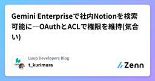

Luup Developers Blogのフィード
https://zenn.dev/p/luup_developers
電動キックボードや小型電動アシスト自転車など、電動マイクロモビリティのシェアサービス「LUUP」を展開するLuupのテックブログです。Zenn Publication利用中 【エンジニア採用中】recruit.luup.sc
フィード
脅威モデリングを始めてみました - セキュリティリスク分析の第一歩
Luup Developers Blogのフィード
こんにちは、Luup SREチームのにわです。本記事は、Luup Advent Calendar 2025の6日目の記事です。 最初に本記事では、私が脅威モデリングを学習し、社内勉強会を主催して展開を進めている取り組みについて紹介します。セキュリティリスクを設計段階で見える化する手法として、脅威モデリングの基礎知識と、実際に勉強会で共有した内容をお伝えします。注記: 本記事のDFDや事例は一般的な架空システムの例示であり、Luupの実システム構成や運用の詳細を示すものではありません。社内の具体的情報や設定は含みません。 経緯Luupでは、高いセキュリティレベルを要求される...
14時間前

Gemini Enterpriseで社内Notionを検索可能に―OAuthとACLで権限を維持(気合い)
Luup Developers Blogのフィード
本記事は、Luup Advent Calendar 2025の5日目の記事になります。こんにちは、株式会社Luupの栗村です。本記事の内容は、12/05に開催されたTECH PLAY 生成AI Conferenceのスピンオフ記事で、Gemini EnterpriseとNotionとの連携について詳説しています。 1. Gemini Enterpriseと情報検索の課題 1.1 Gemini Enterpriseとはhttps://cloud.google.com/gemini-enterpriseGemini Enterpriseは、ドキュメントツールやコミュニケーショ...
2日前
Pub/SubとTask Queue、非同期処理の適切な使い分けとは？
Luup Developers Blogのフィード
はじめに本記事は、Luup Advent Calendar 2025の4日目の記事になります。こんにちは、株式会社LuupのSoftware部でPlatform / Technology Enabling (Backend TL) を担当している安元（やっすー）です。急遽２日連続で記事を作成することとなってしまったため、もし誤りがあればお気軽にコメントください🙏🔥Luupのバックエンド開発では、Firebase (GoogleCloud) をメインに活用しており、Cloud Functionsを用いたサーバーレスアーキテクチャを採用しています。日々の開発において、ユーザ...
2日前
LUUPプロダクトにおけるアーキテクチャ選定のナラティブなアプローチ
Luup Developers Blogのフィード
はじめに本記事は、Luup Advent Calendar 2025の3日目の記事になります。こんにちは、株式会社LuupのSoftware部でPlatform / Technology Enabling (Backend TL) を担当している安元（やっすー）です。先日開催された「Architecture Conference 2025」にて、「LUUPの事業成長と変化の速さに耐えるモジュラーベースアーキテクチャの設計思想」というテーマで登壇しました。https://architecture-con.findy-tools.io/2025?m=2025/session/m...
3日前
LUUPのWebフロントエンドって？ (技術編)
Luup Developers Blogのフィード
はじめにこんにちは！Luup Advent Calendar 2025の2日目です。昨日に引き続きフロントエンドエンジニアの浅川が担当します！1日目は、LUUPのWebフロントエンドが「どのようなビジネスドメインに関わっているか」というテーマでお話しさせていただきました。1日目の記事はこちら2日目は、昨日お話しした多様なドメインを「どのような技術や組織で支えているのか」にフォーカスを当てていきます！ チームと開発領域 WebフロントエンドチームWebフロントエンドチームは正社員1名と業務委託パートナー3名の計4名体制です。少数のチームではありますが、後述する多様...
4日前
LUUPのWebフロントエンドって？ (ビジネスドメイン編) 1
1
Luup Developers Blogのフィード
はじめにこんにちは！LUUPでフロントエンドエンジニアをしている浅川です。今年もLUUPの開発メンバーでAdvent Calendarをすることになりました！1か月間、チームメンバーがLUUPのことを発信していくので、読んでみていただけると嬉しいです！初日と2日目は、LUUPのWebフロントエンドチームが電動マイクロモビリティ事業のあらゆる側面（フィールドオペレーション、車両の管理や修理、マーケティング、営業など）に深く関わっていることを紹介します。この記事を通じて、当社のフロントエンドエンジニアが向き合うビジネスドメインの広さと、その面白さや難しさをお伝えできたらいいなと思...
5日前

QAとSREが統合したQualityチームの挑戦
Luup Developers Blogのフィード
はじめにLuupに所属している、ぐりもお（@gr1m0h）です。2025年7月、私が所属していたInfra/SREチームとQAチームが統合し、新たにQualityチームが発足しました。この体制変更は、品質保証とサイト信頼性エンジニアリングを統合的に捉える試みであり、従来の組織サイロを超えた挑戦だと考えています。本記事では、SREチームのメンバーとしての視点から、私の考えを整理してお伝えします。QAとSREをどのように統合するか、そしてSREのプラクティスを用いて品質と信頼性を一貫して確保していくかについて説明したいと思います。なお、本記事では以下の用語を次のように定義していま...
12日前
タスク管理基盤をGitHub Projectsで再構築する時の実装パターン
Luup Developers Blogのフィード
はじめにLuupに所属している、ぐりもお（@gr1m0h）です。私たちのチームでは、スクラム的なアプローチを採用してタスク管理しています。プロダクトオーナーが不在であるため、チーム全員でタスクの優先順位付けやリファインメントを行い、スプリント単位で開発を進めているという特徴があります。https://zenn.dev/luup_developers/articles/sre-gr1m0h-20250605これまでNotionDBを使ってタスク管理していましたが、開発ワークフローとの分断が課題となっていたため、GitHub Projectsへの移行を決断しました。本記事では、...
1ヶ月前
iOSDC Japan 2025 にスポンサーブース出展してきました！
Luup Developers Blogのフィード
はじめにこんにちは！iOSエンジニアとして、LUUPアプリを開発している @tsuboyan5 です。2025年9月19日〜21日に開催された iOSDC Japan 2025 にて、スポンサーブース出展してきましたので、その様子をお伝えできればと思います！これまでは、try! Swift Tokyo 2025 に参加してきました！ のように参加者視点でのレポートが多かったですが、この記事では出展側からの視点でお届けします。 iOSDC Japan 2025 についてiOSDC Japan は、iOS関連技術を中心的なテーマとしたエンジニアのためのカンファレンスです。と...
2ヶ月前
Luup Serverチームの開発スケールのためのAI活用事例
Luup Developers Blogのフィード
はじめにこんにちは！株式会社Luupで、Software部 Platformグループ Technology Enabling チームに所属している安元（やっすー）です。一ヶ月ほど前とはなりますが、「AI活用Meetup」というイベントに「開発スケールのためのAI活用」というタイトルで登壇したので、内容をご紹介します。https://lapras.connpass.com/event/361288/ Luup開発チームのAI活用Luupでは、マイクロモビリティシェアのサービスを通して、人々の移動をより豊かにすることを目指しています。サービスが成長し、開発規模が拡大する中...
3ヶ月前
「マイクロモビリティシェアサービスを支えるプラットフォームアーキテクチャ」という題で登壇しました
Luup Developers Blogのフィード
はじめにLuupでSWEをしている、ぐりもお（@gr1m0h）です。8/23に広島県で開催されたオープンセミナー2025@広島に登壇しました。毎年テーマが変わるこのイベントですが、今年は「君はどこで動かすか？」がテーマでした。今回は、LuupのSREチームがビジネスやサービスの特性、そしてその変化に対してどのような課題認識を持ち、どういう対応をしてきたのかをお話ししました。オブザーバビリティツールの選定やインシデント対応の仕組み作りといった具体的な取り組みを紹介しています。https://osh.connpass.com/event/355425/ちなみに昨年は「XRE ...
3ヶ月前
【イベント】LuupはSRE NEXT 2025に初ブース出展しました！
Luup Developers Blogのフィード
こんにちは、株式会社LuupでEngineeringManagerをしている瀧川です。先日、2025年7月11日（金）〜12日（土）にTOC有明で開催されたSRE NEXT 2025に、Luupはシルバースポンサーとして協賛させていただきました！実は、Luupではエンジニア向けのカンファレンスでブース出展するのは今回が初めてだったのですが、結果として200名を超える方にブースへ訪問いただけました！多くの方に私たちのサービスやエンジニアの取り組みに触れていただく機会が作れたことはとても嬉しく思っています！この記事では、どういった思いでブース出展させていただいたかやブースの設計、当日...
4ヶ月前
Luup Infra/SREチームの現在地
Luup Developers Blogのフィード
はじめにLuupのInfra/SREチームに所属している、ぐりもお（@gr1m0h）です。この記事は、2022年に公開したLuup Infra/SREチームを紹介した記事をアップデート版です。現在の私たちのチームがどのようなフェーズにあり、どのようなミッションを掲げ、どの機能領域を担い、そして日々どのような動き方で業務に取り組んでいるのかを中心に紹介します。https://zenn.dev/luup_developers/articles/sre-horiuchi-20220829なお、本記事では以下の用語を次のように定義しています。Luup社名、株式会社Luup...
6ヶ月前
Luupインターン経験と分析業務の紹介（データサイエンティスト/アナリスト）
Luup Developers Blogのフィード
こんにちは、Data Groupでインターンをしていた柳です。2023年12月から2025年3月まで、Luupでデータサイエンティスト/アナリストとして活動していました。今回は、インターンで実際に取り組んだ業務内容を交えながら、その経験を振り返ります！ Luupインターンに興味を持った理由Luupのインターンに興味を持った理由は大きく2つあります。1つ目は、「専門分野を活かせる場面が多いこと」です。私は大学および大学院で機械学習および数理最適化を学び、研究室ではシェアモビリティの再配置（※需要と供給のバランスをとるために、車両を移動させること）にも取り組んでいました。Luu...
7ヶ月前
try! Swift Tokyo 2025 に参加してきました！
Luup Developers Blogのフィード
はじめにこんにちは！iOSエンジニアとして、LUUPアプリを開発している @tsuboyan5 です。2025年4月9日〜11日に開催された try! Swift Tokyo 2025 に、Luup の iOS エンジニア3名で参加してきました。セッションやブースを見てまわりつつ、多くのエンジニアの方とも交流できました。この記事では、その様子をお伝えできればと思います！ try! Swift Tokyo 2025 についてtry! Swiftは、Swiftを使った開発のノウハウや最新の事例を共有するために、世界中から開発者が集まるカンファレンスです。今回の try! S...
7ヶ月前
Luupの技術選定の考え方
Luup Developers Blogのフィード
こんにちは。株式会社Luup CTOの岡田(@7omich)です。私たち Luup は "街じゅうを「駅前化」するインフラをつくる" というミッションを掲げ、電動マイクロモビリティのシェアリングサービス「LUUP」を開発・運営しています。このサービスは、現実世界の街中に配置された数万台規模の車両やポートを管理し、大量のユーザーが適切に利用できる状態を維持しなければならない、難易度の高い技術的要求を伴う事業でもあります。この記事では、Luup のプロダクト開発においてどのような技術選定がなされており、その裏側にはどんな考え方があるのかについて少しお話ししようかと思います。 全体像...
8ヶ月前
入社から3か月のデータアナリストの業務紹介
Luup Developers Blogのフィード
こんにちは、Data Groupのデータアナリストをしている加藤です。2024年10月1日よりLuupで働き始め、早くも3か月以上が経過しました。（諸事情により公開が遅れました）今回はLuupを転職先に選んだ理由と、データアナリストとしての日々の業務についてお話しします。 前職について新卒で金融機関に入社し、2年半にわたり自治体向けのキャッシュレス決済プロジェクトのデータ分析やデータ関連の事務を担当しました。1～2年目では、事業の理解を深めながら、BIツール（Tableau・Qlik Sense）を使って、決済状況や予算の進捗状況のダッシュボードや顧客向けレポートの作成をしま...
8ヶ月前
タダでLLMにコミットメッセージを考えてもらおう（Ollama + OpenCommit)
Luup Developers Blogのフィード
こんにちは。t-kurimuraです。先日LuupのSoftwareDevelopment部では、LLMをテーマに社内勉強会が開催されました！私自身もコーディング時のGitHub Copilotの補完だったり、手持ちのスマホのAndroid端末ではPerplexityをデフォルトのアシスタントに設定できたりするので趣味やニュースのことをPerplexityに聞いてみたり、生活のなかでもLLMツール漬けの毎日です。いくつかのLLMツールに課金をしていますが、ワーク＆ライフ両方に相応かそれ以上の価値があるように感じています。 「コミットメッセージ」さて、ソフトウェア開発においてコ...
8ヶ月前
IoTソリューションのオブザーバビリティについて考えてみる
Luup Developers Blogのフィード
こんにちは。SREチームの岡谷です。自分は、Luupで使っているソリューションに限らず、多くのIoTの仕事をしてきているので、IoTソリューション毎に考えうるメトリクスと取得する場所についてちょっと考えてみたいと思います。 NFCみなさんが良く使っているSuicaなどもNFCの一種です。もちろんシステムによってとるべきメトリクスは違ってくるとは思うのですが、自分が関わった仕事だと読み取り失敗率というのが多くの場合、重要になってきます。読み取り失敗するとそもそもデータが読み取れず何も実現できなくなってしまいます。そのため、読み取り失敗しないようにプロダクトデザインを変える、読み取...
10ヶ月前
SLO運用時にどんなドキュメントを作るか？
Luup Developers Blogのフィード
はじめにLuupのSREチームに所属している、ぐりもお（@gr1m0h）です。この記事は、ふと以下の投稿を思い出したことがきっかけで、内容を整理してまとめることにしました。https://x.com/gr1m0h/status/1828656194015433005Luup SREチームでは、SLO運用に際して、ドキュメントを2つ作成しています。SLO DocsSLO Onboardingまた、本記事では以下の使い分けを行っています。Luup社名、株式会社Luupこの記事では組織を表す時に使用LUUPサービス名株式会社Luupが提供している電動...
10ヶ月前